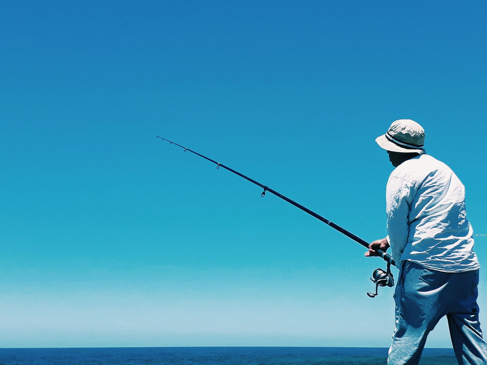
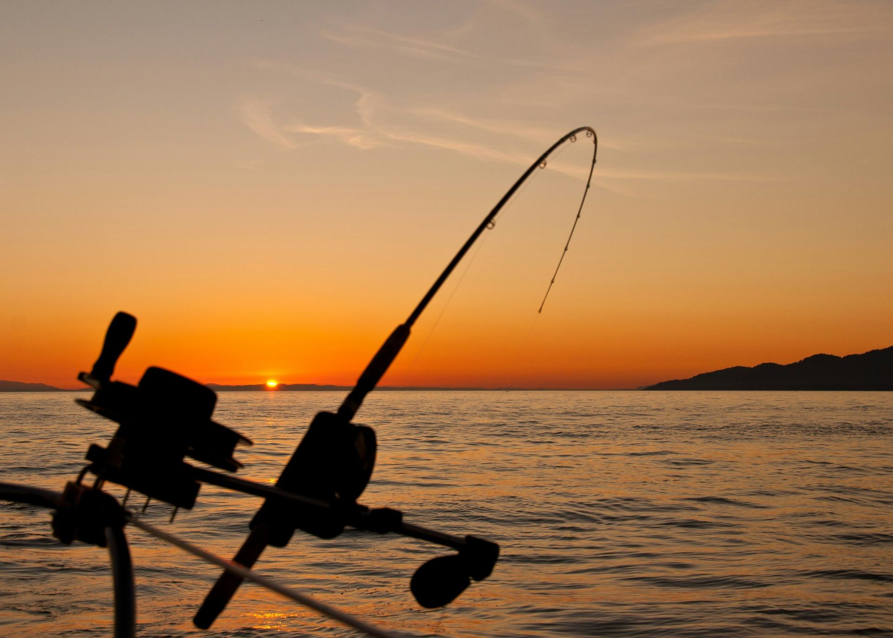
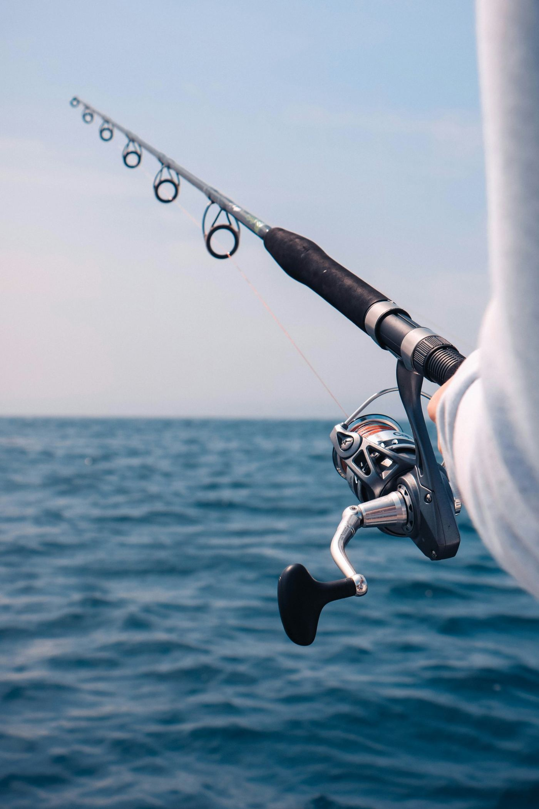
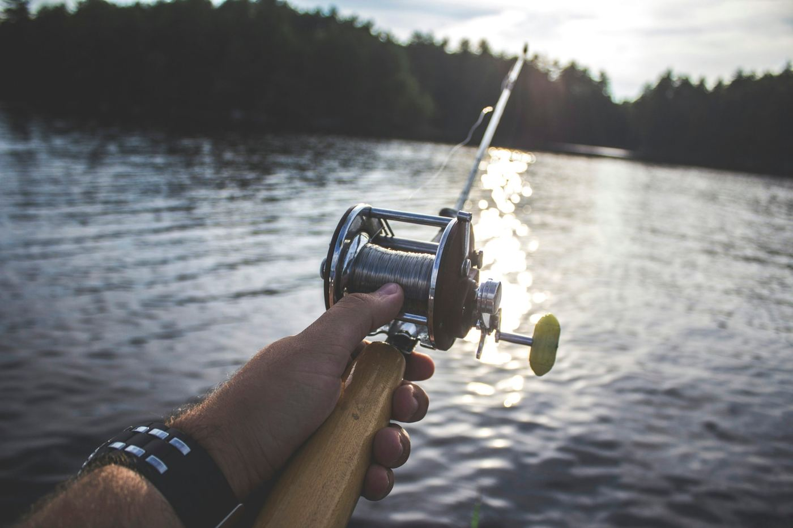
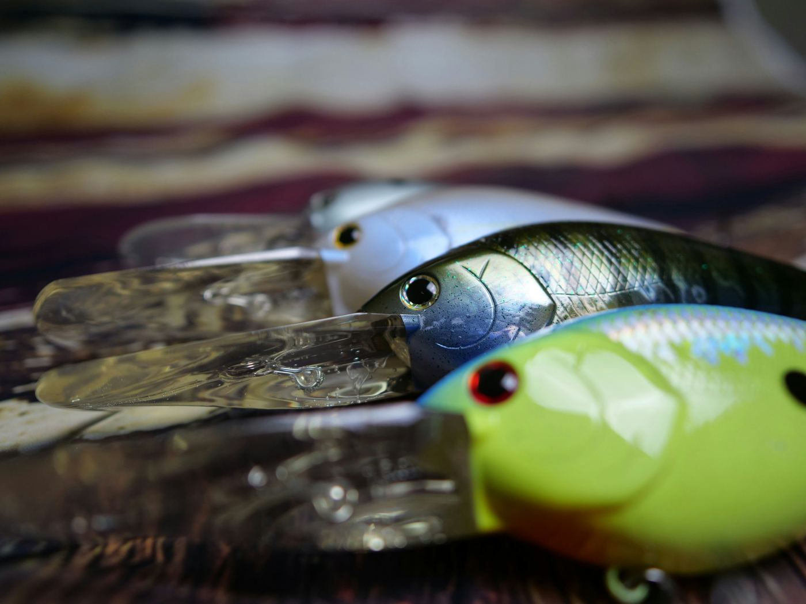
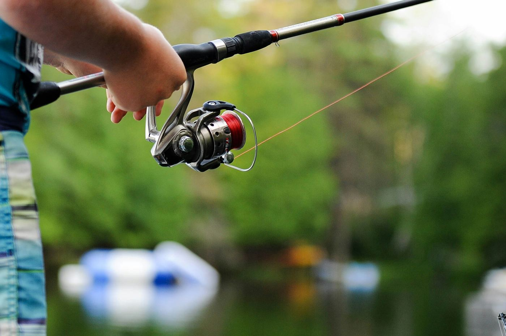
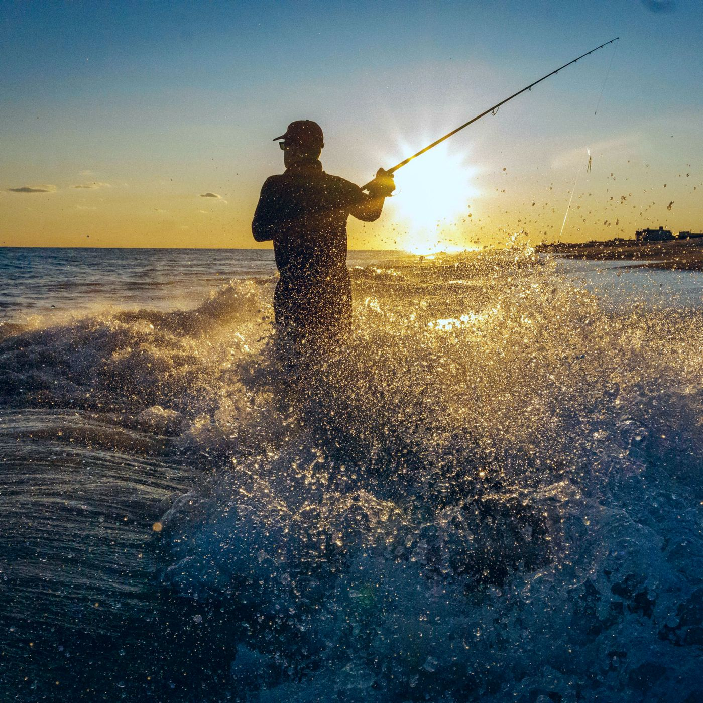
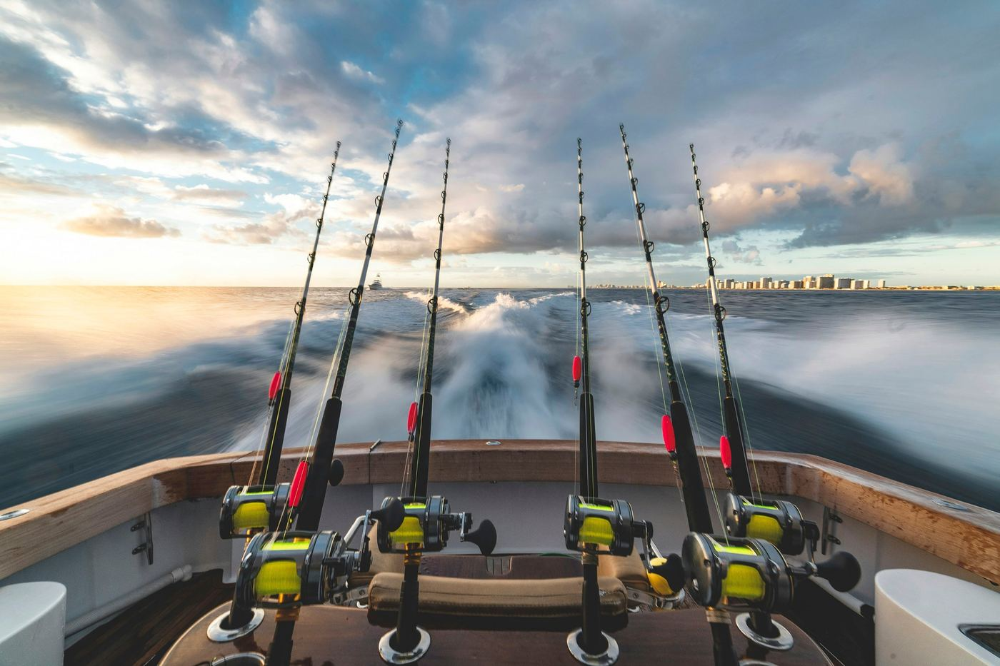
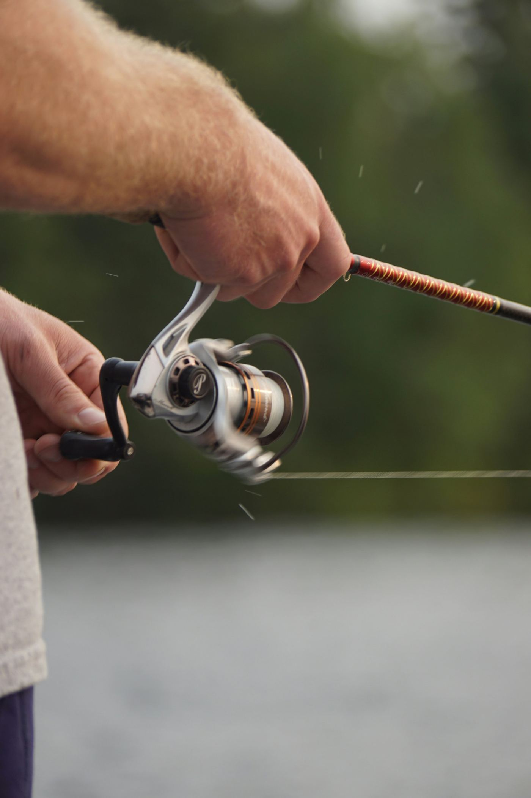

Pêcher du bord à Menton : le guide pour bien débuter
Techniques, matériel, moments propices et règles à connaître pour vos premières sorties sur la côte mentonnaise.
Lire l'article
Cannes, moulinets, leurres et conseils de terrain pour le surfcasting, le spinning, le shore jigging et la pêche en bateau. Cours de pêche gratuits et préparation de vos voyages de pêche.

Idéalement situé sur le terre-plein du Port de Garavan à Menton, Fish and Ships Tackle Shop accueille tous les passionnés de pêche, des amateurs de sorties locales aux voyageurs en quête d'exotisme.
À l'image de l'entraide qui anime chaque jour notre communauté sur Facebook, le magasin est un lieu vivant d'échange et de conseil technique. Débutant qui veut faire ses premières armes ou pêcheur confirmé qui prépare une expédition à l'autre bout du monde, nous vous accompagnons avec du matériel éprouvé et une vraie expertise de terrain.
Du bord ou en bateau, en Méditerranée ou au bout du monde : une sélection adaptée à chaque pratique et des conseils pour bien l'utiliser.
Cannes longues, moulinets à grande capacité, plombs et montages pour pêcher depuis les plages de la Riviera.
Lancer-ramener et jigs depuis les côtes rocheuses pour traquer les prédateurs : loups, bonites, sérioles.
Tout l'équipement pour vos sorties en bateau le long de la côte : verticale, traîne légère, pêche à soutenir.
Du matériel taillé pour le gros, pour affronter les plus beaux spécimens au large.
Les produits que nos clients plébiscitent pour pêcher sur la Riviera. Disponibilités et nouveaux arrivages : passez au magasin ou demandez-nous.

Top venteLégères, nerveuses et puissantes pour lancer loin depuis les rochers et combattre les prédateurs.
Vérifier la dispo
Coup de cœurTraitement anti-corrosion, frein progressif : des moulinets pensés pour l'eau salée et les longues sessions.
Vérifier la dispo
Top ventePoissons nageurs, leurres souples, casting jigs : la sélection qui fait mouche en Méditerranée.
Vérifier la dispo
Tresses fines et résistantes, fluorocarbone discret : le duo gagnant pour lancer loin et rester invisible.
Vérifier la dispo
Cannes, moulinets et accessoires assortis pour pêcher depuis la plage, de jour comme de nuit.
Vérifier la dispo
VoyageMulti-brins et compactes, elles tiennent dans la valise sans rien sacrifier à la performance.
Préparer mon voyageLes grandes références de la pêche en mer, sélectionnées pour leur fiabilité.
Vous cherchez une marque ou une référence précise ? Demandez-nous, on vous la trouve.
Parce que la passion se transmet, et qu'un voyage de pêche se prépare.

Nous organisons des initiations et des cours gratuits, quel que soit votre niveau.

Tropiques, Atlantique, océan Indien… Nous préparons votre équipement selon la destination et les espèces recherchées.
Matériel, sorties et belles prises : un aperçu de l'univers Fish and Ships.
Ce que nos clients disent de leur passage au magasin.
Un gérant très sympathique et vraiment serviable. Je recommande ce magasin à tous ceux qui veulent pêcher dans le coin de Menton !
Je suis venu acheter une canne et je suis reparti avec tous les conseils en plus. Merci encore !
Super magasin de pêche, énormément de choix dans un petit espace. Et de bons tuyaux sur les coins où pêcher.
Tout ce qu'il faut savoir avant de passer au magasin.
Fish and Ships Tackle Shop est situé au 4 Terre-Plein du Port de Garavan, 06500 Menton, directement sur le port, à deux pas de la frontière italienne. Téléphone : 09 51 88 84 98.
Oui. Nous organisons des initiations et des cours gratuits pour apprendre les bases, perfectionner votre gestuelle de lancer ou découvrir une nouvelle technique. Pour vous inscrire, appelez-nous ou utilisez le formulaire de contact.
Pour débuter en spinning depuis la côte, un ensemble canne de 2,40 à 2,70 m, moulinet de taille 3000 à 4000, tresse fine et bas de ligne en fluorocarbone, avec quelques leurres polyvalents, couvre la plupart des situations. Nous affinons le choix en magasin selon le spot et l'espèce visée.
Oui, c'est l'une de nos spécialités. Tropiques, Atlantique, océan Indien : nous préparons un équipement sur-mesure (cannes de voyage, tresse, bas de ligne, leurres spécifiques) selon votre destination et les espèces recherchées.
Toutes les pêches sportives en mer : surfcasting, spinning (lancer-ramener) et shore jigging depuis le bord, ainsi que la pêche côtière et hauturière en bateau en Méditerranée, du léger au gros.
Aucun permis n'est exigé pour la pêche de loisir en mer en France. Il faut en revanche respecter les tailles minimales de capture, les quotas, le marquage des prises et les règles propres à certaines espèces. Nous vous renseignons volontiers au magasin.
Nouveautés, conseils météo et prises de la communauté sont publiés en temps réel sur notre page Facebook Fish and Ships Tackle Pro Shop Menton.
Au cœur du port, entre la vieille ville et la frontière italienne.
Disponibilité d'un article, inscription à un cours gratuit, préparation d'un voyage de pêche : écrivez-nous, ou appelez directement le magasin.
Techniques, matériel et préparation de voyage : nos conseils de terrain.
Techniques, matériel, moments propices et règles à connaître pour vos premières sorties sur la côte mentonnaise.
Lire l'articleCanne, moulinet, tresse, poids des jigs et animation : l'essentiel pour traquer les prédateurs depuis les rochers.
Lire l'article
Cannes de voyage, tresse, bas de ligne, leurres, transport aérien : ne rien oublier avant le grand départ.
Lire l'article